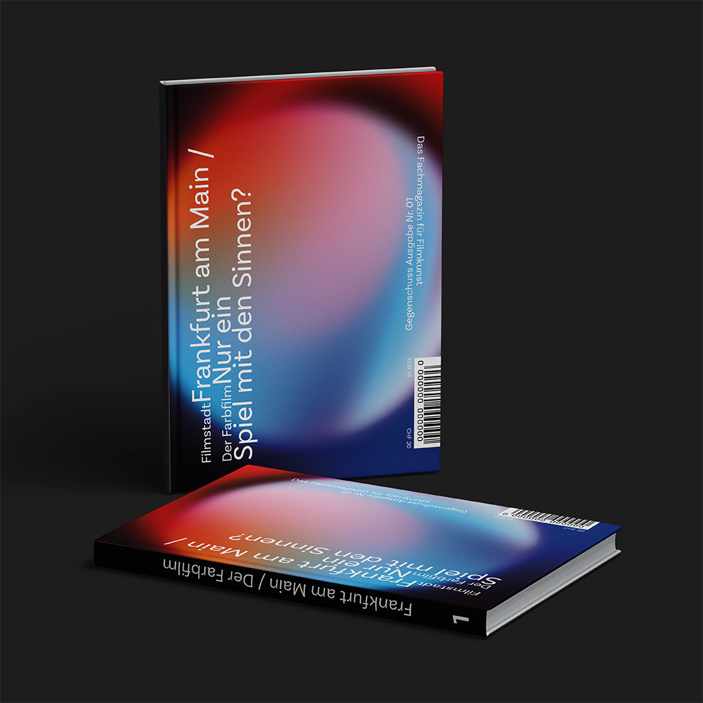
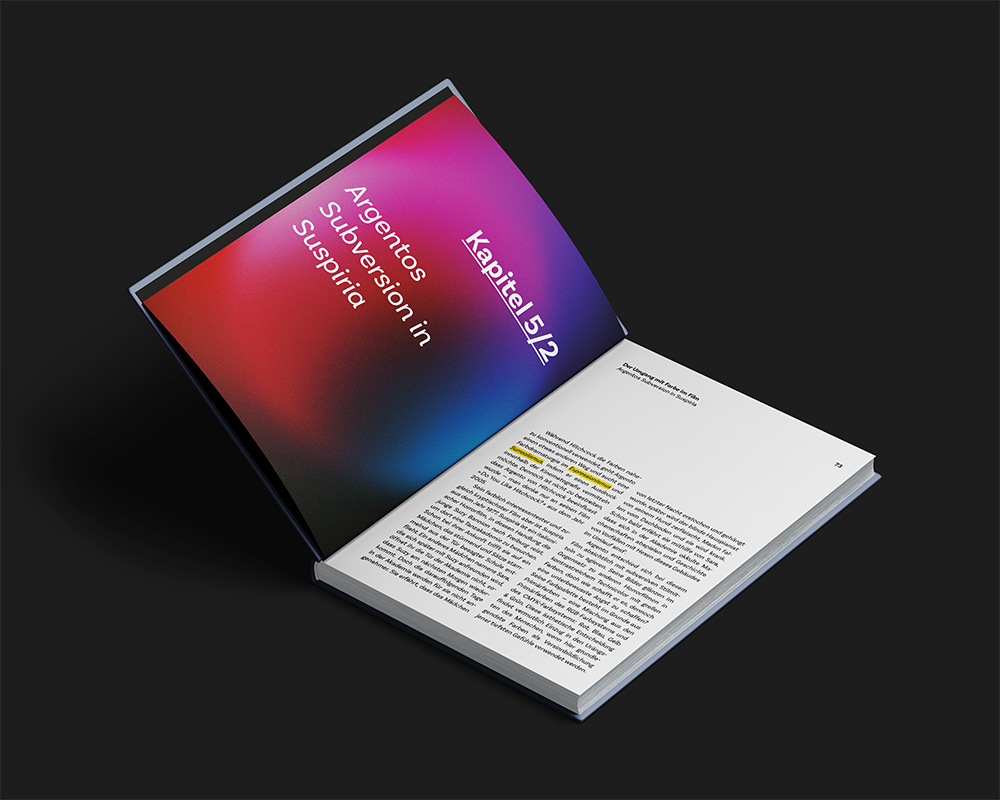
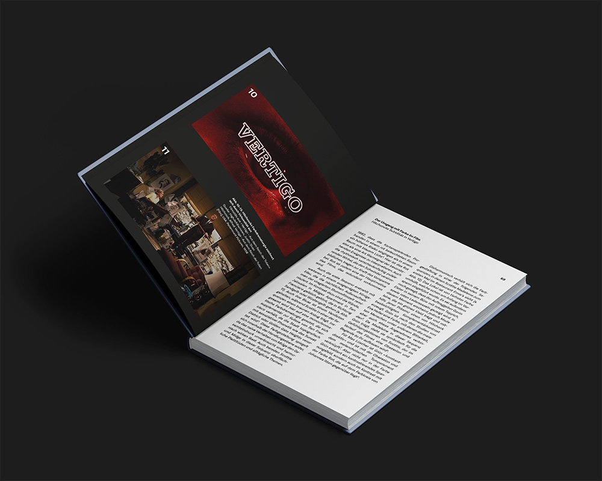
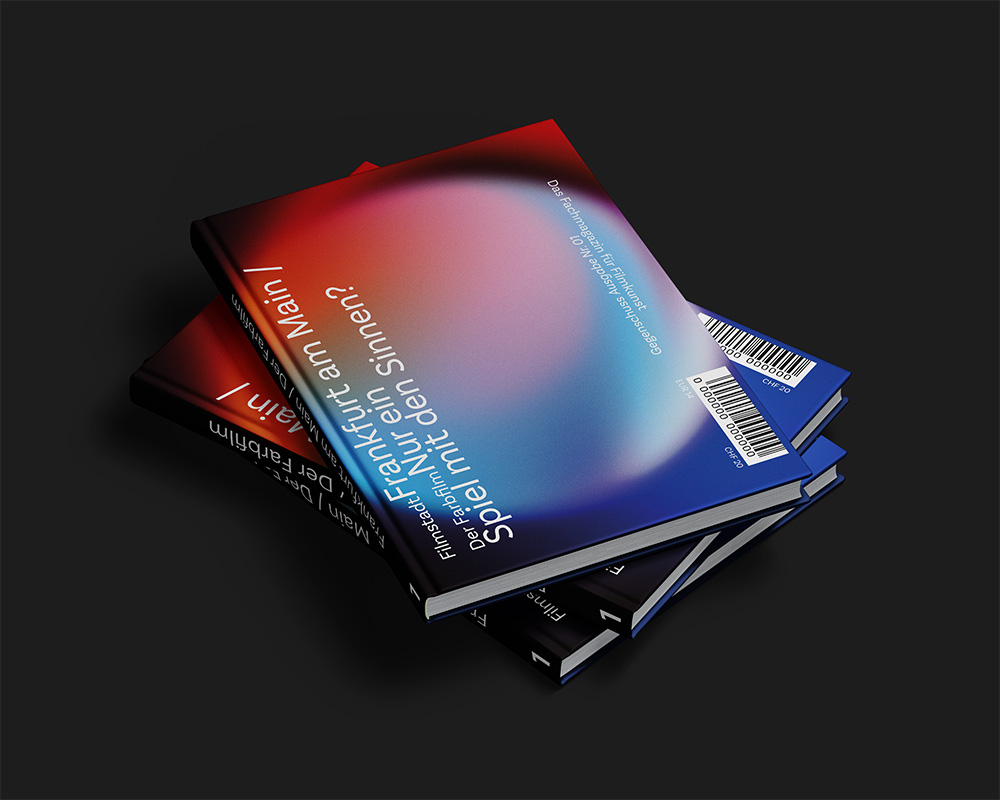

Since the very beginnings of cinema history, filmmakers have sought to approximate reality by enabling film, through technical innovations, to acquire ever further and new dimensions. The extent to which this development occurred in the first place and how it corresponds with film theorists is examined in the present theoretical and practical study. I also intend to question the thesis that colors are merely »sensory stimuli« and that »educated people […] feel a certain aversion to colors« (Theory of Colours). I aim to do so by means of suitable examples such as Vertigo (in comparison with Psycho); Paris, Texas; and Suspiria. Key concepts in this context include color theory, color symbolism, and the expressive potential of color—what the colorful image can convey that black-and-white cannot. More generally, I seek to explore why color is so profoundly impactful for human perception and what significance it holds within the cinematic medium.
Thus, for my thesis, »The color film — just playing with senses?« I developed a concept in which such text could be published twice a year in a film magazine called »Gegenschuss«. The boundaries between the media are supposed to merge here—it's not quite a book, but not a magazine either—just as the boundaries in film merge. »Gegenschuss« is dedicated to cineastes and film lovers and, above all, to people who want to take a closer look at specific topics. The issues are structured in such a way that they consist of two large sections each time: one part deals with the cinema landscape of a city (e.g., Berlin, Frankfurt, Lyon, New York City), and the other part is dedicated to a design topic in film (e.g., sound, editing, actors, etc.). The format of the magazine corresponds to the Mediabook format of 14.2 × 19.2 cm. It therefore fits perfectly with the mediabooks in the film collection, which most readers of this publication will probably have. The content is oriented towards film studies, while the design is intended to be a little different from the »classic concept« of the typical mediabook booklet.
Schon seit Anbeginn der Kinogeschichte versuchen sich Filmschaffende der Realität anzunähern, indem der Film durch technische Neuerungen immer weitere und neue Dimensionen bekommt. Inwiefern diese Entwicklung erst einmal überhaupt stattfand und wie sie mit Filmtheoretikern korrespondiert, wird in vorliegender theoretischer und praktischer Arbeit beantwortet. Auch möchte ich die These, dass Farben nur »Sinnesreize« seien und dass »gebildete Menschen […] einige Abneigung vor Farben« hätten in Frage stellen. (Goethes Farbenlehre). Das möchte ich durch geeignete Beispiele wie Vertigo (Gegenüberstellung mit Psycho); Paris, Texas und Suspiria erreichen. Hier sind wichtige Stichpunkte: Farbenlehre, Farbsymbolik und was das Bunte ausdrücken kann, was das Schwarz-Weiße nicht kann. Allgemein gesagt möchte ich herausfinden, wieso die Farbe so eindrücklich für den Menschen ist und welche Bedeutung sie im Kino hat.
Im Rahmen meiner Abschlussarbeit mit dem Titel »Der Farbfilm — nur ein Spiel mit den Sinnen?« entwickelte ich ein Konzept, demzufolge ein derartiger Text halbjährlich in einer Filmzeitschrift mit dem Titel »Gegenschuss« veröffentlicht werden könnte. Dabei sollen die Grenzen zwischen den Medien bewusst ineinander übergehen — es handelt sich weder eindeutig um ein Buch noch um ein Magazin — ebenso wie im Film selbst Grenzziehungen verschwimmen. »Gegenschuss« richtet sich an Cineast*innen sowie an Filmliebhaber*innen und insbesondere an jene, die sich vertieft mit spezifischen Themen auseinandersetzen möchten. Die einzelnen Ausgaben sind so konzipiert, dass sie jeweils aus zwei umfangreichen Hauptteilen bestehen: Ein Abschnitt widmet sich der Kinolandschaft einer Stadt (z. B. Berlin, Frankfurt, Lyon, New York City), während der andere Teil ein gestalterisches Thema des Films behandelt (z. B. Ton, Montage, Schauspiel u. a.). Das Format der Zeitschrift entspricht dem Mediabook-Format von 14,2 × 19,2 cm. Es fügt sich somit passgenau in die Mediabooks einer Filmsammlung ein, über die die Mehrzahl der Leserinnen und Leser dieser Publikation voraussichtlich verfügt. Inhaltlich orientiert sich die Zeitschrift an filmwissenschaftlichen Fragestellungen, während die gestalterische Konzeption bewusst von dem »klassischen Konzept« eines typischen Mediabook-Booklets abweichen soll.


